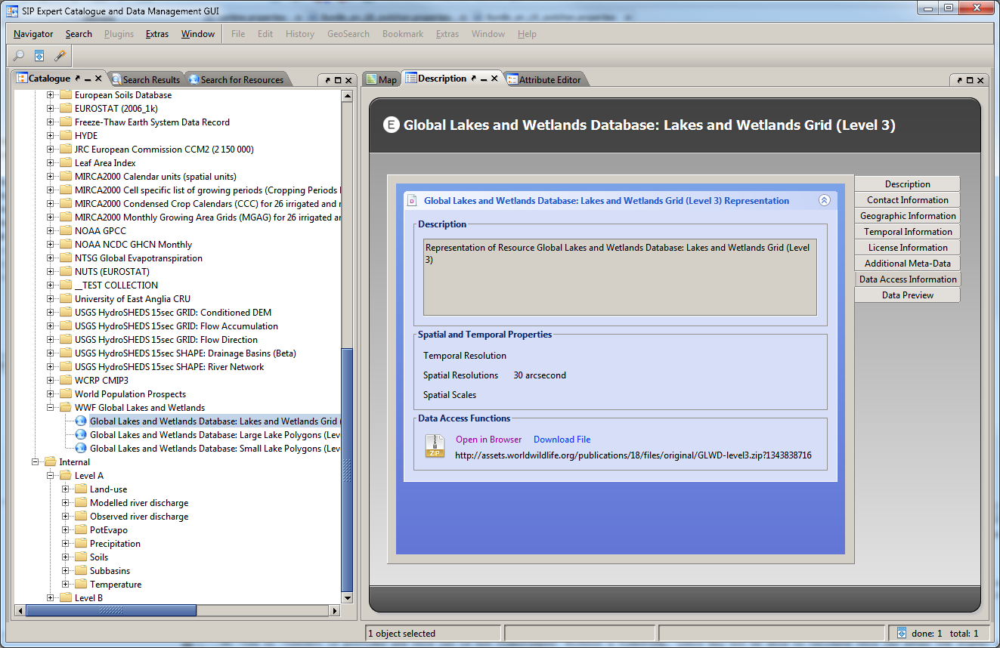
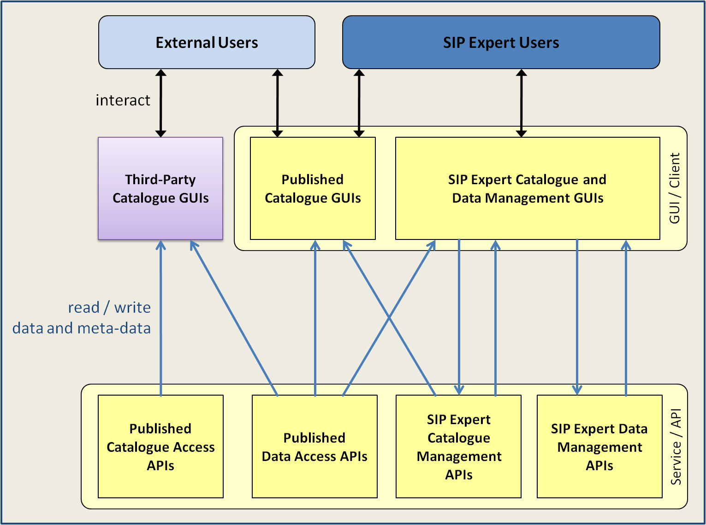

SIP Expert Catalogue and Data Management GUI
cids-custom-switchon project website on github.io
View the Project on GitHub switchonproject/cids-custom-switchon
About the SIP Expert GUI
This is the Expert Catalogue and Data Management GUI Prototype of the Spatial Information Platform (SIP) of the SWITCH-ON EU FP7 collaborative project.

Besides advanced data and meta-data visualisation, search, and manipulation functionalities, the SIP Expert GUI covers the whole cycle of publishing, binding, finding and repurposing of open data. The Expert GUI is implemented by SWITCH-ON partner cismet on basis of the cids navigator as integrated desktop application which can be run from the Internet (Java WebStart). It is intended to be used by verified experts and members of the SWITCH-ON project only. A light wight HTML5 version of the SIP GUI for finding and binding open data is currently under development.
Software Architecture
According to the architecture of the SIP the GUI layer of the SIP architecture contains several user interface and user interaction components for expert
and external users. The general concepts of the Spatial Information Platform are briefly explained in the
SIP Concepts presentation.

The Published Catalogue Access GUIs are web-based internet applications that provide easy access to water-related open-data and thus are the entry points for external users to results of the SWITCH-ON project. Standard web technologies like HTML5 and JavaScript are used for their implementation so users only need a web browser to access these GUIs. Furthermore, external users can interact with the SIP via their own Third-Party Catalogue GUIs that connect to the standards-based Published Catalogue Access APIs of the SIP.
The Expert Catalogue and Data Management GUIs cover besides advanced data and meta-data visualisation, search, and manipulation functionalities the whole cycle of publishing, binding, finding and repurposing of open data. As mentioned before, the Expert GUIs are implemented by SWITCH-ON partner cismet on basis of the cids navigator as integrated desktop application which can be run from the Internet (Java WebStart).
Technical Documentation
The following technical documentation regarding the SIP Expert GUI is available:
-
SIP Expert GUI Generic Use Cases and Requirements
This document described the generalised uses cases and related requirements on components of the Spatial Information Platform (SIP) for the SWITCH-ON project that have been derived from D2.1 “Spatial Information Platform and Application Programming Interface”, D2.6 “Standard Information Model: Definition and Description” and user requirements expressed by WP3 “New forms of Research” and WP4 “Products and services”. -
SIP Expert GUI Software Design Document
This document represents a software design document that has been created to drive the development of the SIP Expert GUI. All features specified in the design document have been implemented in the current development branch of the SIP Expert GUI. -
Developer Documentation
The Developer Documentation wiki of the SIP Expert Catalogue and Data Management GUI (cids-custom-switchon) contains useful information for developers of the SIP as well as for individuals involved in the installation and maintenance of the SIP instances.
Downloads
The executable software of the SIP Expert GUI is distributed online as Java Web Start Application (see Running the SIP Expert GUI). Therfore a download and a local installation of the software is not necessary. However, binaries (development builds) and source code are available on the Artifactory and GitHub repositories.
Running the SIP Expert GUI
The latest release of the SIP Expert GUI can be started via the following JNLP Link. Please note, that the Java Runtime Environment 1.7 is required run the SIP. The minimal system requirements for running the SIP Expert GUI besides the presence of a Java Runtime Environment are a PC with at least 2 GB of RAM.
Interactive User Guides and Tutorials
The following interactive user guides in form of instructional videos have been provided for all aspects of the SIP Expert GUI to help users understand and use its advanced publish, find and bind functionalities.
How register new Resources in the SIP
The Meta-Data Wizard Tutorial shows you how to register a new open data resource in the SIP by providing basic meta-data about the resource with help of the Meta-Data Wizard of the SIP Expert GUI. An important prerequisite for the resource registration process is that the actual resource data is accessible online (e.g. available in SWITCH-ON Subversion Repository) and URI to the data is known. For more information on how to upload data, please refer to the SWITCH-ON Subversion Tutorial of the Virtual Water-Science Laboratory.
Meta-Data provides information about data and thus allows the correct discovery, identification and interpretation of data for a given purpose. The main purpose of meta-data in SWITCH-ON is to find, bind, transform and publish open data (Open Data Repurpose Pattern).
In SWITCH-ON, meta-data is defined by the Standard Information Model for Meta-Data. It is based on an ISO 19115 meta-data profile (meta-data standard recommended by the INSPIRE directive) and thus also compatible with external catalogues like GEOSS.
The Basic Meta Data Profile of the Meta-Data Wizard asks only for minimal set of meta-data that makes the data find- and bind-able in the SIP.
To ensure compliance with the ISO standard, the Meta-Data Wizard automatically provides additional default values, unless they are explicitely provided by the user, e.g. in the Advanced or Expert Meta-Data Profiles.
The minimal meta-data sets includes
- Resource name and description
- (CUASHI) keywords
- spatial extent
- access conditions and license information
- resource location (URI)
The following video shows how to register a new Resource in SIP with help of the Basic Meta-Data Profile of the Meta-Data Wizard. For detailed instructions, please refer to the Tutorial Document.

How to start the SIP Expert GUI
This video provides instructions on how to run a JNLP file and start Java Webstart Rich Internet Application from the Internet.
SIP Expert GUI Basics
This video showcases the basic functionality and features of the SIP Expert GUI. It instructs users how to browse the catalogue, how to show information on objects in the catalogue, how use the powerful geospatial visualisation capabilities of the map component and how to use wizards.
Find, Bind and Publish Open Data
This video showcases the following find, bind and publish use cases:
- Find Open Data by Browsing Meta-Data (find)
- Find Open Data by browsing a catalogue of Resources (find)
- Assess usefulness of resources by viewing basic Meta-Data
- Find Data by queries (temporal, spatial, keywords, ...) on Resource Meta-Data
- Assess usefulness of resources by viewing Quality and basic Lineage Meta-Data
- Show a Preview of the Resources
- Access Resources Data by downloading a file (bind)
- Access Resources Data by viewing Resource Data directly in the SIP GUI
- Edit Resource Meta-Data
- Register new Resource by providing Meta-Data with help of a Basic Meta-Data Wizard (publish)
Reporting Problems
Please report any problems or bugs related to the SIP Expert Catalogue and Data Management GUI by using the GitHub Issue Tracker.